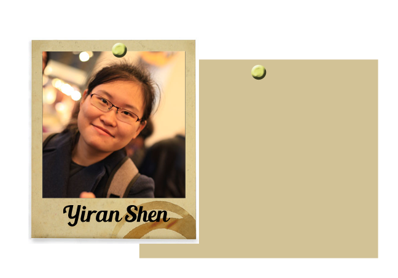

Meet our Team! |
|
 |
|
 |
 |
 |
|
| Major: Chemical Engineering |
| Classification: Senior |
| Interesting Fact: When I was in 5th grade, I won the spelling bee for the nation of Taiwan by spelling the word "antidisestablishmentarianism" |
| Major Responsibilities: Chairwoman of Beautification |
| Major: Chemical Engineering |
| Classification: Senior |
| Interesting Fact: I love lamp. |
| Major Responsibilities: Technical Journalist |
| Major: Chemical Engineering |
| Classification: Junior |
| Interesting Fact: The longest amount of time that I can stand on my head underwater is 5 minutes and 32 seconds. It's in the Guinness Book of World Records. |
| Major Responsibilities: First Researcher Web Concept Designer |
| Major: Mathematics & Finance |
| Classification: Senior |
| Interesting Fact: Yiran runs a small bootlegging operation in her spare time. She still does not know that alcohol is perfectly legal in the United States. |
| Major Responsibilities: Master Translator |
| Major: Mathematics |
| Classification: Senior |
| Interesting Fact: My favorite conspiracy theory involves crab-people, Donald Trump, and the Real Slim Shady. Ask me about it. |
| Major Responsibilities: Head of Security |
| Stats |
|---|
| Total Number of Commits: 48 |
| Total Number of Issues: 15 |
| GitHub Issue Tracker |
| GitHub Repo |
| GitHub Wiki Link |
| Tools |
|---|
| Tools Used: GitHub, Slack, Adobe Photoshop, Javascript |